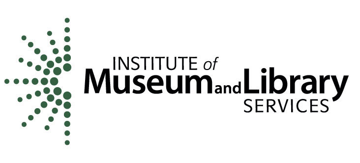

About Us
What is the Memory Lab Network?
In spring 2017, the Institute of Museum and Library Services awarded DC Public Library (DCPL), in partnership with the Public Library Association (PLA), a National Leadership Grant to build Memory Lab digital preservation programs in seven public libraries across the U.S. based on the DCPL Memory Lab model. Through an application process, seven public libraries were identified as the first cohort of Memory Lab Network project partners. All Memory Lab Network partners receive training, mentoring and financial support to create digitization stations and curricula to build public knowledge and skills around the complex and paralyzing problems of personal digital archiving through their own Memory Lab programs. Since the grant was awarded, Library of Congress National Digital Initiatives joined the project as a training and outreach partner. In August of 2018, IMLS awarded the Memory Lab Network another two years of funding for a second cohort of project partners. The call for applications for our second cohort will be announced in Summer of 2019.
This project was made possible in part by the Institute of Museum and Library Services, Grant Number LG-95-17-0079-17
What is the Memory Lab model?
DC Public Library’s Memory Lab was established in 2015 by a year-long National Digital Stewardship Residency (NDSR), resulting in a “do-it-yourself” program consisting of three key components: A digitization lab with equipment for digitizing video and audio and scanning photographs, documents and slides in a public computing space; digital preservation class curricula and training for the public; and a website with equipment and workflow instructions and resources for long-term storage and preservation of analog and digital archival materials. The NDSR project final report and the original project proposal are both available online. The residency was funded by the Institute for Museum and Library Services and administered by the Library of Congress.
Cohort One
Announced Feb. 1, 2018:
- Boyle County Public Library
- Broward County Library
- Houston Public Library
- Karuk Tribal Libraries
- Los Angeles Public Library
- New Ulm Public Library
- Pueblo City-County Library District
Cohort One Advisory Board
- Nate Hill – Executive Director, Metropolitan New York Library Council
- Jaime Mears – National Digital Initiatives, Library of Congress; former NDSR Resident who built the DCPL Memory Lab
- Lauren Algee – National Digital Initiatives, Library of Congress; former DCPL Digital Curation Librarian who helped build the DCPL Memory Lab
- Yvonne Ng – Senior Archivist, WITNESS
- Rick Prelinger – Founder of the Prelinger Archives; Professor, University of California, Santa Cruz
- Nick Kerelchuk – Technology and Innovation Manager, Memory Lab Network Project Director, DC Public Library